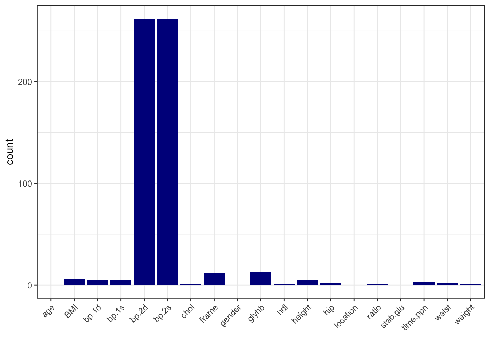
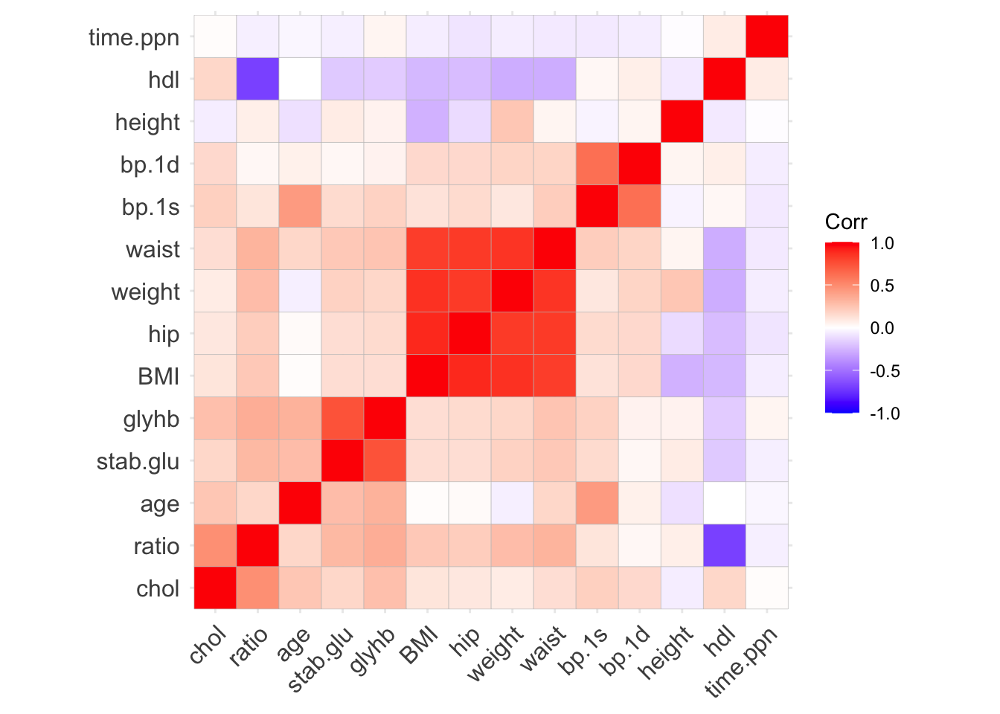
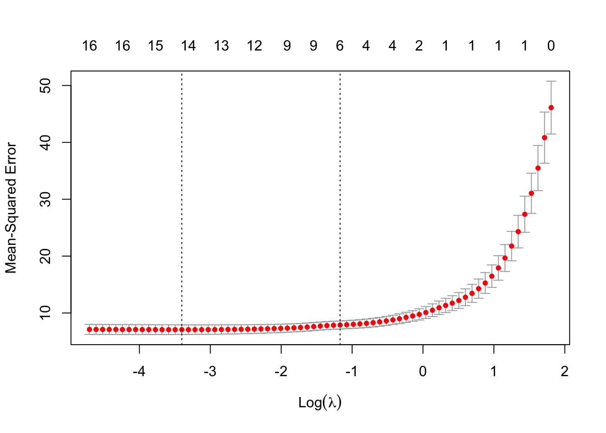
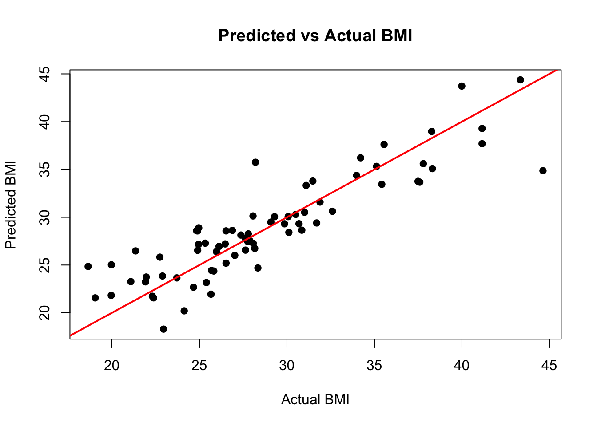
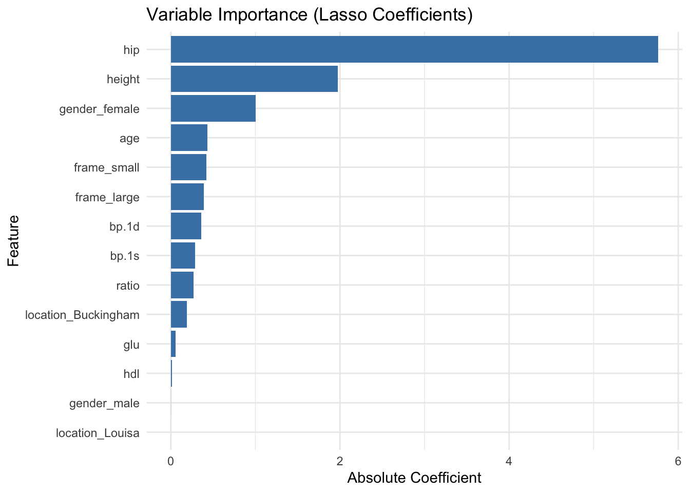

set.seed(123)
n <- nrow(data_diabetes)
test_index <- sample(seq_len(n), size = 0.2 * n)
data_test <- data_diabetes[test_index, ]
data_train <- data_diabetes[-test_index, ]2 Demo: a predictive modelling case study (base R approach)
Let’s use base R and selected packages to build a predictive model for BMI using our diabetes data set.
2.1 Load Data and Perform EDA
library(tidyverse)
library(ggcorrplot)
library(glmnet)
library(fastDummies)
# Load the data
input_diabetes <- read_csv("data/data-diabetes.csv")
# Create BMI variable
data_diabetes <- input_diabetes %>%
mutate(BMI = round(weight / height^2 * 703, 2)) %>%
relocate(BMI, .after = id)
# preview data
glimpse(data_diabetes)
## Rows: 403
## Columns: 20
## $ id <dbl> 1000, 1001, 1002, 1003, 1005, 1008, 1011, 1015, 1016, 1022, 1…
## $ BMI <dbl> 22.13, 37.42, 48.37, 18.64, 27.82, 26.50, 28.20, 34.33, 24.51…
## $ chol <dbl> 203, 165, 228, 78, 249, 248, 195, 227, 177, 263, 242, 215, 23…
## $ stab.glu <dbl> 82, 97, 92, 93, 90, 94, 92, 75, 87, 89, 82, 128, 75, 79, 76, …
## $ hdl <dbl> 56, 24, 37, 12, 28, 69, 41, 44, 49, 40, 54, 34, 36, 46, 30, 4…
## $ ratio <dbl> 3.6, 6.9, 6.2, 6.5, 8.9, 3.6, 4.8, 5.2, 3.6, 6.6, 4.5, 6.3, 6…
## $ glyhb <dbl> 4.31, 4.44, 4.64, 4.63, 7.72, 4.81, 4.84, 3.94, 4.84, 5.78, 4…
## $ location <chr> "Buckingham", "Buckingham", "Buckingham", "Buckingham", "Buck…
## $ age <dbl> 46, 29, 58, 67, 64, 34, 30, 37, 45, 55, 60, 38, 27, 40, 36, 3…
## $ gender <chr> "female", "female", "female", "male", "male", "male", "male",…
## $ height <dbl> 62, 64, 61, 67, 68, 71, 69, 59, 69, 63, 65, 58, 60, 59, 69, 6…
## $ weight <dbl> 121, 218, 256, 119, 183, 190, 191, 170, 166, 202, 156, 195, 1…
## $ frame <chr> "medium", "large", "large", "large", "medium", "large", "medi…
## $ bp.1s <dbl> 118, 112, 190, 110, 138, 132, 161, NA, 160, 108, 130, 102, 13…
## $ bp.1d <dbl> 59, 68, 92, 50, 80, 86, 112, NA, 80, 72, 90, 68, 80, NA, 66, …
## $ bp.2s <dbl> NA, NA, 185, NA, NA, NA, 161, NA, 128, NA, 130, NA, NA, NA, N…
## $ bp.2d <dbl> NA, NA, 92, NA, NA, NA, 112, NA, 86, NA, 90, NA, NA, NA, NA, …
## $ waist <dbl> 29, 46, 49, 33, 44, 36, 46, 34, 34, 45, 39, 42, 35, 37, 36, 3…
## $ hip <dbl> 38, 48, 57, 38, 41, 42, 49, 39, 40, 50, 45, 50, 41, 43, 40, 4…
## $ time.ppn <dbl> 720, 360, 180, 480, 300, 195, 720, 1020, 300, 240, 300, 90, 7…
# run basic EDA
# note: we have seen descriptive statistics and plots during EDA session
# note: so here we only look at missing data and correlation
# calculate number of missing data per variable
data_na <- data_diabetes %>%
summarise(across(everything(), ~ sum(is.na(.))))
# make a table with counts sorted from highest to lowest
data_na_long <- data_na %>%
pivot_longer(-id, names_to = "variable", values_to = "count") %>%
arrange(desc(count))
# make a column plot to visualize the counts
data_na_long %>%
ggplot(aes(x = variable, y = count)) +
geom_col(fill = "blue4") +
xlab("") +
theme_bw() +
theme(axis.text.x = element_text(angle = 45, vjust = 1, hjust=1))
# Based on the number of missing data, let's delete bp.2s, bp.2d
# and use complete-cases analysis
data_diabetes <- data_diabetes %>%
dplyr::select(-bp.2s, -bp.2d) %>%
na.omit()
# Correlation heatmap
data_cor <- data_diabetes %>%
select(where(is.numeric), -id) %>%
cor()
ggcorrplot(data_cor, hc.order = TRUE, lab = FALSE)

2.2 Split Data
2.3 Feature Engineering and Scaling
# Conversion factors
inch2m <- 2.54 / 100
pound2kg <- 0.45
# ---- Process Training Data ----
data_train_processed <- data_train %>%
mutate(
height = round(height * inch2m, 2),
weight = round(weight * pound2kg, 2),
glu = log(stab.glu)
) %>%
select(-stab.glu, -id)
# Remove zero-variance features
nzv <- sapply(data_train_processed, function(x) length(unique(x)) > 1)
data_train_processed <- data_train_processed[, nzv]
# Remove highly correlated predictors (|r| > 0.8)
cor_matrix <- cor(select(data_train_processed, where(is.numeric)))
high_corr <- names(which(apply(cor_matrix, 2, function(x) any(abs(x) > 0.8 & abs(x) < 1))))
#data_train_processed <- data_train_processed %>% select(-all_of(high_corr))
data_train_processed <- data_train_processed %>% select(-c("weight", "waist"))
# Dummy encode categorical variables
data_train_processed <- dummy_cols(data_train_processed,
select_columns = c("location", "gender", "frame"),
remove_selected_columns = TRUE)
# Separate outcome and predictors
y_train <- data_train_processed$BMI
x_train <- data_train_processed %>% select(-BMI)
# Scale predictors
x_train_scaled <- scale(x_train)
train_means <- attr(x_train_scaled, "scaled:center")
train_sds <- attr(x_train_scaled, "scaled:scale")2.4 Prepare Test Data with Same Processing
# ---- Process Test Data ----
data_test_processed <- data_test %>%
mutate(
height = round(height * inch2m, 2),
weight = round(weight * pound2kg, 2),
glu = log(stab.glu)
) %>%
select(-stab.glu, -id)
# Dummy encode categorical variables
data_test_processed <- dummy_cols(data_test_processed,
select_columns = c("location", "gender", "frame"),
remove_selected_columns = TRUE)
# Remove same columns as in training
data_test_processed <- data_test_processed %>%
select(colnames(data_train_processed))
# Ensure same column order as training
x_test <- data_test_processed %>% select(-BMI)
x_test <- x_test[, colnames(x_train)]
# Apply training set scaling
x_test_scaled <- scale(x_test, center = train_means, scale = train_sds)
y_test <- data_test_processed$BMI2.5 Lasso Regression with Cross-Validation
# Fit Lasso regression with 10-fold CV
set.seed(123)
cv_model <- cv.glmnet(x_train_scaled, y_train, alpha = 1, standardize = FALSE)
# Plot cross-validation error
plot(cv_model)
# Best lambda value
best_lambda <- cv_model$lambda.min
cat("Best lambda:", best_lambda)Best lambda: 0.033301542.6 Evaluate Model on Test Data
# Predict
pred_test <- predict(cv_model, s = best_lambda, newx = x_test_scaled)
# RMSE
rmse <- sqrt(mean((pred_test - y_test)^2))
cat("RMSE on test data:", rmse)RMSE on test data: 2.729465# Correlation
cor(pred_test, y_test) [,1]
s1 0.8872908# Scatter plot: Predicted vs Actual
plot(y_test, pred_test,
xlab = "Actual BMI", ylab = "Predicted BMI", pch = 19,
main = "Predicted vs Actual BMI")
abline(0, 1, col = "red", lwd = 2)
2.7 Variable Importance Plot
# Extract coefficients
coef_matrix <- coef(cv_model, s = best_lambda)
coef_df <- as.data.frame(as.matrix(coef_matrix))
coef_df$feature <- rownames(coef_df)
colnames(coef_df)[1] <- "coefficient"
# Filter out intercept and zero coefficients
coef_df <- coef_df %>%
filter(feature != "(Intercept)", coefficient != 0) %>%
mutate(abs_coef = abs(coefficient)) %>%
arrange(desc(abs_coef))
# Plot
ggplot(coef_df, aes(x = reorder(feature, abs_coef), y = abs_coef)) +
geom_col(fill = "steelblue") +
coord_flip() +
labs(title = "Variable Importance (Lasso Coefficients)",
x = "Feature", y = "Absolute Coefficient") +
theme_minimal()